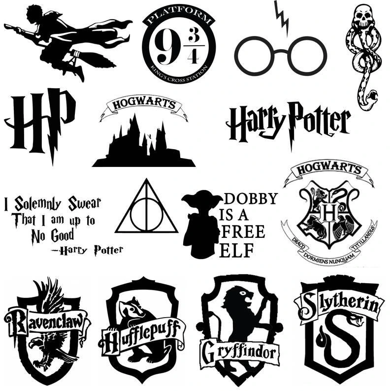
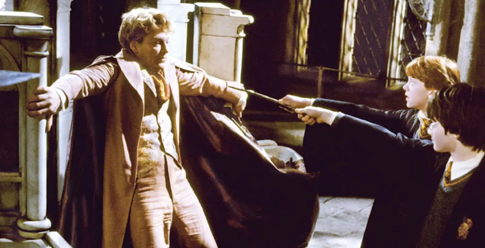

PotterHeads
Clube Dos Bruxos @wizardingworld

Quais Feitiços de Harry Potter Foram Mais Usados nos Filmes?
Expelliarmus – Usado 24 vezes.
Esse é o feitiço mais usado em toda a saga. Como muitos dos feitiços utilizados na série, o Expelliarmus tem sua origem no latim e significa, literalmente, “expulsar a arma”. Qualquer bruxo que deseje desarmar seu oponente deve aperfeiçoar e dominar esse feitiço, que faz com que a varinha de seu alvo seja jogada para trás. É uma escolha acertada para bruxos que não desejam ferir seus oponentes. Por isso mesmo, é pouco utilizado pelos Comensais da Morte, seguidores de Lord Voldemort (Ralph Fiennes). Quem usa o feitiço Expelliarmus? Esse é o feitiço mais característico do próprio Harry Potter (Daniel Radcliffe), mas também é usado por Hermione Granger (Emma Watson), Severo Snape (Alan Rickman) e Cedric Diggory (Robert Pattinson). Esse feitiço aparece em praticamente todos os filmes e tem papel-chave em dois momentos cruciais da série, nos filmes “Harry Potter e o Cálice de Fogo” e “Harry Potter e as Relíquias da Morte – Parte II”.
Cena acima Filme: "Harry Potter E A Câmara Secreta"
Estupefaça – Usado 19 vezes.
O segundo feitiço da nossa lista deixa suas vítimas inconscientes e é bastante usado pelos protagonistas da série, pois não causa grandes danos ou sofrimento. Apesar de não ser particularmente nocivo, ao longo dos filmes podemos ver que é bastante útil. Estupefaça tem papel de destaque no filme “Harry Potter e a Ordem da Fênix” em duas cenas memoráveis – a primeira divertidíssima e a segunda bastante tensa, mas não vamos dar spoilers aqui!
Quem usa o feitiço Estupefaça?
Vemos muitos bruxos utilizarem esse feitiço, entre eles a pavorosa Dolores Umbridge (Imelda Staunton), a excêntrica Luna Lovegood (Evanna Lynch) e o hilário Fred Weasley (James Phelps), um dos gêmeos Weasley.O segundo feitiço da nossa lista deixa suas vítimas inconscientes e é bastante usado pelos protagonistas da série, pois não causa grandes danos ou sofrimento. Apesar de não ser particularmente nocivo, ao longo dos filmes podemos ver que é bastante útil. Estupefaça tem papel de destaque no filme “Harry Potter e a Ordem da Fênix” em duas cenas memoráveis – a primeira divertidíssima e a segunda bastante tensa, mas não vamos dar spoilers aqui! Quem usa o feitiço Estupefaça? Vemos muitos bruxos utilizarem esse feitiço, entre eles a pavorosa Dolores Umbridge (Imelda Staunton), a excêntrica Luna Lovegood (Evanna Lynch) e o hilário Fred Weasley (James Phelps), um dos gêmeos Weasley.
Copilado de Memorys
Estupefaça – Usado 19 vezes.
O segundo feitiço da nossa lista deixa suas vítimas inconscientes e é bastante usado pelos protagonistas da série, pois não causa grandes danos ou sofrimento. Apesar de não ser particularmente nocivo, ao longo dos filmes podemos ver que é bastante útil. Estupefaça tem papel de destaque no filme “Harry Potter e a Ordem da Fênix” em duas cenas memoráveis – a primeira divertidíssima e a segunda bastante tensa, mas não vamos dar spoilers aqui!
Quem usa o feitiço Estupefaça?
Vemos muitos bruxos utilizarem esse feitiço, entre eles a pavorosa Dolores Umbridge (Imelda Staunton), a excêntrica Luna Lovegood (Evanna Lynch) e o hilário Fred Weasley (James Phelps), um dos gêmeos Weasley.
{kind=link}
{kind=link}
{kind=link}
{kind=link}
Expecto Patronum Usado 11 vezes.
Essa é uma das magias mais memoráveis de toda a saga Harry Potter. O feitiço tem a função de espantar dementadores – terríveis criaturas das trevas – e gera uma manifestação da alegria em forma de animal. As palavras desse encantamento também vêm do latim. “Expecto” significa “desejo”, e “patronum” significa “protetor”. Assim, ao usar esse feitiço, conjura-se um guardião, cuja aparência é extremamente pessoal e revela muito sobre o bruxo que o conjurou. Esse é um dos encantamentos mais difíceis de se realizar, e diversos bruxos competentes são incapazes de executá-lo.
{kind=link}
{kind=link}
{kind=link}
Avada Kedavra – Usado 8 vezes
feitiço macabro é a pior das três Maldições Imperdoáveis – uma tríade de feitiços das trevas cujo uso pode significar prisão perpétua em Azkaban. É um feitiço que tira a vida de suas vítimas, e nenhum bruxo jamais conseguiu sobreviver a ele. Quer dizer, quase nenhum. Afinal, Harry Potter não é conhecido como o “menino que sobreviveu” à toa. Essa maldição é comumente usada pelos Comensais da Morte, mas é fortemente associada a “Aquele-Que-Não-Deve-Ser-Nomeado”. O termo “Avada Kedavra” tem a mesma origem da palavra “Abracadabra”. Ambos vêm de uma expressão em aramaico que significa “crio enquanto falo”.
usa o feitiço Avada Kedavra?
Além de Lord Voldemort, esse é um feitiço usado por outros bruxos das trevas e aparece em vários filmes da série, mas tem maior relevância nas duas partes de “Harry Potter e as Relíquias da Morte”.
{kind=link}
{kind=link}
{kind=link}